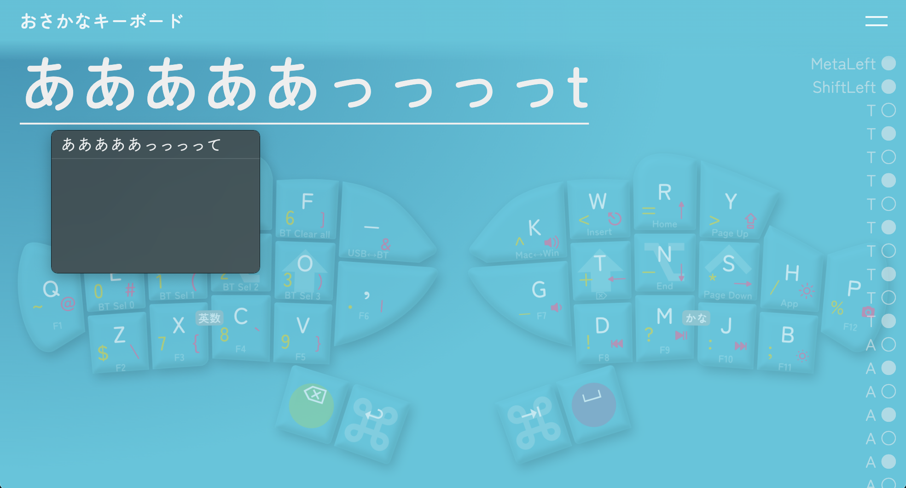
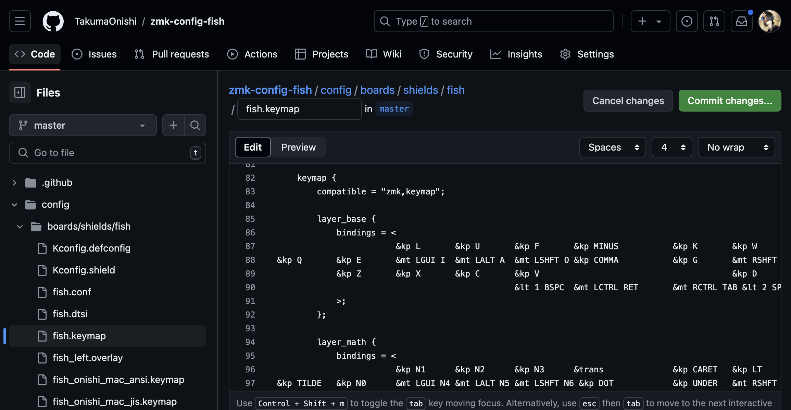

ユーザーガイド
おさかなキーボードをお買い求めいただき、ありがとうございます。
使い方を説明させてください。
使い始める

二匹を向かい合うように置き、それぞれの下アゴの陰にある灰色の電源スイッチを上に切り替えます。
パソコンからBluetooth機器の管理画面を開き、「Fish Keyboard」が表示されたら接続します。
適当なキーを押して、入力が通っているか確かめます。
動作確認がしやすいテストページもご活用ください。
infoデフォルトキーマップ
開封時点では以下のようなキーマップが設定されています（購入時期によって若干異なる場合があります）。

単にキーを押すと、青字の入力になります。英字は大西配列です。
黄色い丸（BackSpace）を押しながらキーを押すと、黄色字の入力になります。
赤い丸（Space）を押しながらキーを押すと、赤字の入力になります。
その両方を押しながらキーを押すと、灰色字の入力になります。
AとO、TとNを同時に押すとそれぞれ日本語IMEのオフ、オンが入ります。
ホールドタップ複合キーは、短く押してから長押しすると連続入力が入ります。
これらは、キーマップを変えるの手順で自由に書き換えることができます。
充電する
USB Type-Cケーブル（別売り）を用意し、電源スイッチを入れた状態でパソコンと有線接続します。
うまく充電できていれば、口の横が緑色に光ります。
USB接続と電源スイッチの入切によって、おさかなは以下のように動作します。
| USB接続あり | USB接続なし | |
| 電源 オン |
バッテリーを充電しながら動作します。親機ならUSBに入力しますが、OUT_XXXキーでBlueTooth入力にも切り替えられます。 | バッテリー電源で動作し、Bluetoothで入力します。通常はこの状態で使用してください。 |
| 電源 オフ |
USB電源で動作し、USBに入力します。ただし、子機はどんな場合でもBluetoothで親機に入力を伝えようとします。 | 動作しません。長時間使用しないときはこの状態にしてください。 |
info親機と子機
おさかなキーボードには親機と子機があります。
子機は親機に入力を伝え、親機がそれを合わせた入力をパソコンに伝えます。
このため、親機のみ電源を入れて使うことはできますが、逆はできません。
左手デヴァイスとしての使用を考え、出荷時は左手を親機に設定しています。
また同様の理由から、子機は親機の４倍ほど充電が長持ちします。
一部のOSで確認できる充電残量は親機のもので、子機の充電残量を確認する方法はありませんが、親機のついで程度に充電してあげてください。
キーマップを変える
おさかなキーボードは構成するZMK Firmwareの一般的なリマップ手順に準じ、以下のように作業してください。
ファイル置き場を作る（初回のみ）
Githubのアカウントを用意し、おさかなキーボードの設定リポジトリをフォークします。
infoGithubとは
Githubは世界最大のソースコード共有ツールで、リポジトリはプロジェクトみたいなこと、フォークは自分用に複製することです。
詳しい手順は数多ある解説記事に譲ります。
ファイルを更新する

キーマップエディターでキーマップを作成し、saveボタンからfish.keymapファイルをパソコンに保存します。
作成したGithubリポジトリのconfig > boards/shields/fishを開き、新しいfish.keymapをドラッグ＆ドロップ、またはAdd fileボタンからアップロードしてcommitします。
infoファイルの置き方
アップロードするとき、同名のファイルは暗黙裡に置き換えられます。
名前を変えて複数の.keymapファイルを置いておくこともできますが、有効なのはfish.keymapという名前の１つだけです。
また、キーマップは以下のような方法でテキストとして編集することもできます。
Github上の editボタンから直接編集し、commitする
ローカルにcloneしてテキストエディタで編集し、pushする
リポジトリの内容を更新すると、Githubが自動的にファームウェアの生成を始めます。
actionsタブを開いて２分待ち、firmware.zipをダウンロードして解凍します。
info簡略化の計画
将来的には、キーマップエディターでビルドまでできるようになるかもしれません。
おさかなキーボードの売れ行き次第です。
ファームウェアを更新する

おさかなの両機の電源を切った状態で、親機（既定では左手側）だけをパソコンとUSB接続し、上顎の陰にある白いリセットボタンを素早く２回押します。
すると、パソコンに〈XIAO-SENSE〉という外部ストレージが出現するので、親機側のファームウェア（左手ならfish_left~.uf2）をその中に配置します。
読み込まれると自動でキーボードの認識に戻り、新しいキーマップで動作するはずです。
info無視できるエラー
ファームウェアを更新するとき、ファイルの転送やディスクの取り出しに関するエラーが出ることがありますが、通常は無視して大丈夫です。
（参考：Troubleshooting｜ZMK Docs）
注意
直射日光に長く当てないでください。ボディとキーキャップは紫外線で硬化するレジンでできているため、変色・ひび割れを起こすことがあります。
液体や粉塵をかけないでください。ボディは思いのほか密閉されていません。万一かかってしまったら電源を切り、内部に侵入しないよう善処してください。
日本国外での使用は違法になるおそれがあります。無線電波を発する機器には各国で規制があり、日本にはたまたま「使用モジュールが検査済なら最終製品は検査を免れる」という規定があるだけです。
こんなときは
パソコンにBluetooth接続できない
USB接続したらBluetoothでも接続できるようになったなら、そのまま充電してください。
他のホストに接続している可能性があるなら、BT_SEL_X（空いているプロファイル番号）を押すか、BT_CLEARまたはBT_CLEAR_ALLを押して不要なペアリングを解放し、おさかなをペアリングモードに入れてください。
それでも接続できず、他のホストには接続できるなら、パソコン側の設定を見直してください。
infoペアリングの解除
Bluetoothのペアリングを解除するには、キーボード側からもパソコン側からもプロファイル情報を削除する必要があります。
まずおさかなでBT_CLEARまたはBT_CLEAR_ALLを押し、Bluetooth接続が切れたのを確認します。
その後、パソコンのBluetooth設定からもデヴァイス情報を削除します。
片方しか行わないと、再度接続を試みるときに不具合が生じます。
子機が親機に接続できない
子機をUSB接続したら親機に接続できるようになったなら、そのまま充電してください。
更新するファームウェアの左右を間違えた、または親機の左右を変えた直後なら、一度リセットファームウェア（settings_reset~.uf2）を読み込ませたあと正しいファームウェアを読み込ませる、という操作を両機に行なってください。
（参考：Split Keyboard Halves Unable to Pair｜ZMK Docs）
充電ができていない
電源スイッチを入れた状態でパソコンやACアダプターにUSB接続しても緑の光がつかないなら、修理を申請してください。
キーが反応しない・反応が悪い
キーコードの割り当てによらず反応しない・反応が悪いキーがあるなら、修理を申請してください。
相談と修理
キーマップや使用法についての情報交換をしたいときや、不具合の対処に助けが必要なときは、O24 worksのDiscordコミュニティで検索・投稿してください。
修理を申請したいときは、Discordで大西拓磨（takuma_onishi）にDMするか、support@o24.worksにメールしてください。